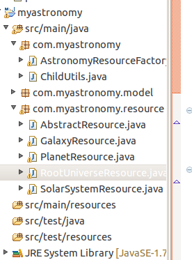

So far we've done pretty generic stuff, but not we're going to write some code which implements milton interfaces. But first, an explanation:
Milton uses a "resource-centric" programming pattern, where incoming request url's are first matched to a data item, and then we figure out what to do with it. This is the opposite of traditional servlet programming frameworks which are script or action centric. For example, with struts you might have an action that maps to /customer.do?customerId=123. In that case the framework first locates a script, and then the script uses a request parameter to locate the data. The equivalent in milton would be /customers/123. Note that some frameworks look superficially like resource-centric but arent. For example, in spring MVC you might have url's like /customers/123, but all that is happening is that the 123 is being matched by a wildcard, it still locates the script first and the script then locates the data.
To do the resource lookup milton relies on you to implement the ResourceFactory interface. This takes a path and a host name (since http supports virtual hosts) and asks you to return an object which represents that data. If no object is found return null. But before we can have a ResourceFactory we need a resource for it to find, and the first resource we need is to represent the root folder. In our example this root folder will contain folders for each galaxy
Create the package: com.mycompany.resource
We're going to have a resource class for each type of object in our "database", and each resource implementation will have a few methods in common, so it makes sense to create an abstract base class.
Add the AbstractResource.java class to the resource package
Lets have a quick look at AbstractResource. Note that it implements DigestResource which permits Digest authentication and it also implements PropFindableResource which allows it to appear in browsers like windows explorer. Resources which dont implement PropFindableResource are just ignored for browse requests, although they can still be uploaded/downloaded, etc.
The main methods to be aware of are the two authenticate methods, which support Basic and Digest authentication, and authorise. We've hard-coded login details of user/password here, but a real implementation would delegate to some sort of security framework.
@Override
public Object authenticate(String user, String requestedPassword) {
if( user.equals("user") && requestedPassword.equals("password")) {
return user;
}
return null;
}
@Override
public Object authenticate(DigestResponse digestRequest) {
if (digestRequest.getUser().equals("user")) {
DigestGenerator gen = new DigestGenerator();
String actual = gen.generateDigest(digestRequest, "password");
if (actual.equals(digestRequest.getResponseDigest())) {
return digestRequest.getUser();
} else {
log.warn("that password is incorrect. Try 'password'");
}
} else {
log.warn("user not found: " + digestRequest.getUser() + " - try 'user'");
}
return null;
}
And our authorise method is very simple, it just checks that there is a logged in user, but normally you would check that the current user has the appropriate priviledge for the requested action.
Now add the RootUniverseResource.java class to that package. Note that it won't immediately compile because it depends on a couple of other things which we'll add in a minute.
The most important thing in RootUniverseResource is the getChildren method. This uses the DAO to find galaxy objects, and it then wraps them in a GalaxyResource class. When a user sends a browse (PROPFIND) request for the the root folder milton will call this method to discover its children. These resource classes use a lazy-loading mechanism for building the children list:
@Override
public List<? extends Resource> getChildren() {
if( children == null ) {
children = new ArrayList<Resource>();
for( Galaxy g : universeDao.getGalaxies()) {
children.add(new GalaxyResource(this, g));
}
}
return children;
}
Now add the other classes to the resources package:
And your project should now look like this:
